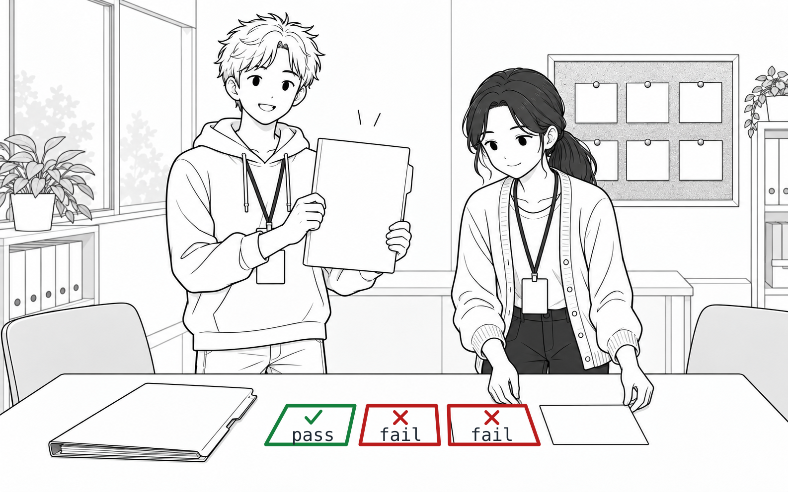
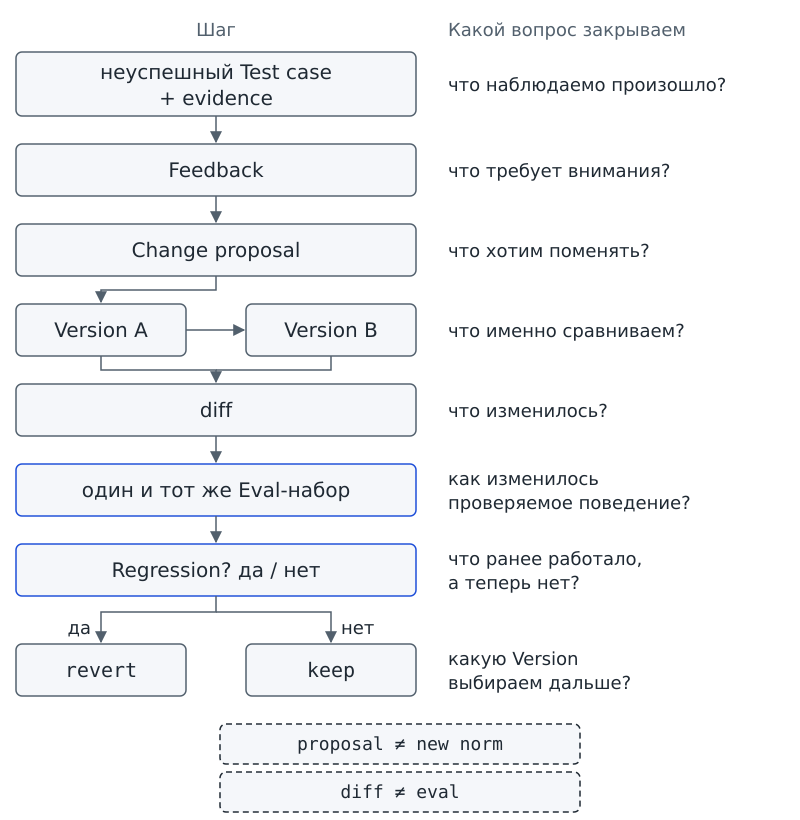
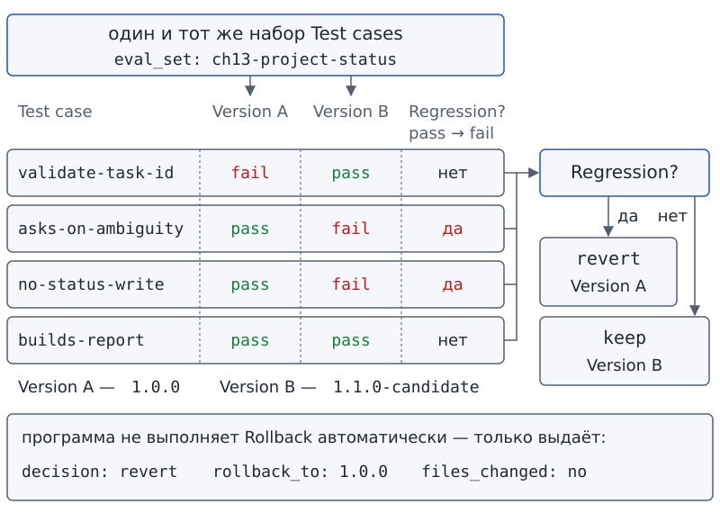

Глава 13. Обратная связь и версии: когда исправление должно менять процедуру?¶
С чего всё началось¶
До Фестиваля науки осталось совсем немного времени. После разбора вчерашнего сбоя Марк понял причину ошибки: в запросе на вызов validate_task_card не было нужного task_id, и запуск закончился ошибкой. Марк открыл копию своего учебного skill, дописал в шаг проверки слова «для каждого task_id из observation» и радостно объявил: теперь проблема исправлена.
Аня попросила не закрывать карточку сразу. Они повторили прежние проверки. Случай, ради которого Марк редактировал процедуру, действительно стал проходить. Однако из новой копии исчезли два прежних правила: возвращать needs_input при неоднозначности и не менять статусы. Исправление помогло в одном случае, но два ранее проходивших случая теперь не проходили проверку.
— Но исходную ошибку я же исправил, — сказал Марк. — Значит, новая копия лучше.
На первый взгляд Марк прав: исходную ошибку удалось исправить. Но достаточно ли одного исправленного случая, чтобы выбрать новую копию? Прежние проверки показывают и другую часть результата — потерю двух правил.
Аня положила рядом старую и новую папки и спросила тебя: что важнее — исправленный случай или поведение всей процедуры после изменения? И если ответ зависит от проверки, то какой именно проверки достаточно, чтобы не спорить по впечатлению?
Вопрос-Прогноз. Если новая процедура исправила исходную ошибку, но ухудшила другое ранее работавшее поведение, можно ли считать изменение улучшением — и какое наблюдаемое доказательство должно решить
keepилиrevert?Главный вопрос главы. Когда исправление должно менять процедуру?

Фигура 37. Исправил один случай — сломал два
После главы ты сможешь¶
- отличать замечание о проблеме от разового факта и от уже принятого правила;
- формулировать проверяемую поправку и связывать её с конкретным Test case и evidence;
- сохранять исходное состояние процедуры до редактирования и сравнивать две копии;
- повторять один и тот же Eval-набор до и после изменения;
- находить ухудшение ранее работавшего поведения;
- объяснять, почему исправленный исходный случай ещё не доказывает улучшение;
- принимать решение
keepилиrevertи обосновывать возврат к предыдущему проверенному состоянию наблюдаемыми результатами.
Урок 25. Как поправка превращается в опыт¶
1. Сначала доказательство, потом правило¶
В прошлой главе мы учились находить причину сбоя по наблюдаемым событиям, а не угадывать причину по финальному сообщению. Возьмём знакомый Trace, в котором зафиксирована ошибка arguments при вызове validate_task_card.
Перед запуском сделай прогноз: программа напечатает только terminal: error или также покажет место отклонения и код причины?
# запуск из корня starter
python trace_demo.py analyze workspace/ch12/cases/invalid_arguments.jsonl
trace: ch12/cases/invalid_arguments.jsonl
terminal: error
tool_calls: 1
errors: 1
approval_events: 0
failure_point: tool_observation call-2 validate_task_card
root_cause: invalid_arguments
Программа показывает место отклонения и код invalid_arguments. По напечатанному выводу можно установить, с каким вызовом связана ошибка. Но вывода недостаточно, чтобы выбрать новую формулировку процедуры. Совет «нужно внимательнее вызывать tool» не объясняет, какие данные следует передать и при каком условии.
Вывод анализатора даёт команде обратную связь. Feedback / обратная связь — замечание, исправление или результат проверки, который может стать основанием для изменения процедуры.
Feedback может прийти от человека, из Eval или из разбора Trace. Обратная связь указывает, что требует внимания, но ещё не определяет новое правило. В нашем случае наблюдаемое основание для обсуждения даёт ошибка arguments.
Не путай Feedback с обратной связью по результату внутри agent loop из главы 2. В агентном цикле результат действия возвращается в цикл. Здесь команда получает замечание о самой процедуре и решает, нужно ли процедуру менять.
Замечание не становится новой нормой автоматически. Если ученик написал «мне удобнее, когда пункты нумеруются римскими цифрами», ученик сообщил о своём предпочтении, а не установил правило для всей процедуры. Код root_cause: invalid_arguments тоже не диктует единственную правильную редакцию SKILL.md: код называет техническую проблему.
Feedback можно сравнить с пометкой учителя на полях контрольной. Пометка указывает место, которое требует внимания, но не заменяет твой способ решения новым. В нашем проекте источником такой пометки может быть не только человек: наблюдаемое основание для изменения дают также результаты Test case и разбора Trace.
Проверь себя на ходу. В одном отчёте написано «в строке 3 потерян
task_id», а в другом — «мне не нравится этот шрифт». Оба сообщения дают Feedback. Почему из этого не следует, что оба должны менять процедуру?
2. Разовый факт или переносимое правило¶
Команда постоянно получает Feedback. Участник просит изменить порядок пунктов, тестовый случай заканчивается fail, а отчёт о сбое (incident report) указывает Root cause — первопричину отклонения. Если каждое замечание немедленно переносить в процедуру, в SKILL.md накопятся случайные исключения.
Прежде чем менять процедуру, ответь на три вопроса:
- Может ли проблема повториться как тип ситуации?
- Можно ли назвать наблюдаемое условие, при котором правило понадобится снова?
- Есть ли Test case, который позволит проверить ожидаемый эффект новой формулировки?
Если ответов пока нет, сохрани Feedback как свидетельство. Для записи нового правила оснований ещё недостаточно.
Сравним две записи:
- «В task-003 сегодня не указан кабинет — всегда подставляй кабинет 214».
- «Если обязательного входа не хватает, не додумывай значение, а верни
needs_input».
Первая запись превращает частную нехватку данных в постоянную подстановку. Даже если кабинет 214 подходит сегодня, завтра кабинет может быть другим. Вторая запись описывает повторяемое условие и действие при таком условии, поэтому уже похожа на правило процедуры.
Допустим, сегодня в карточке не указан обязательный номер кабинета, а завтра в другой карточке не указано обязательное время встречи. Запросить недостающее значение можно в обоих случаях. Во втором случае подстановка 214 вообще бесполезна: время встречи по номеру кабинета узнать нельзя.
Так Agent Skill не превращается в результат «обучения на одном случае». Частный Feedback при этом не пропадает. Замечание может привести к разбору причины, дополнительному Test case или уточнению данных. Чтобы перенести поправку в будущую процедуру, нужно отдельно сформулировать и проверить правило.
3. Предложение ещё не принято¶
Представим, что у команды уже есть evidence — наблюдаемое свидетельство проблемы: validate_task_card получил неправильный набор arguments. Команда предлагает уточнить шаг процедуры: передавать в проверку каждый task_id, полученный после чтения карточек. Команда уже назвала желаемое изменение, а не только сообщила об ошибке.
Change proposal / предложение изменения — сформулированное изменение процедуры, которое ещё не является новой нормой.
Change proposal отвечает на два вопроса: что именно мы хотим поменять и какое поведение ожидаем получить. Предложение должно быть достаточно точным, чтобы другая группа поняла, какой файл и какой шаг обсуждаются.
Записанное предложение ещё не входит в действующую процедуру. Поправка может оказаться слишком узкой, противоречить старому правилу или исправить один случай ценой двух новых ошибок. Поэтому рядом с Change proposal полезно записать:
- источник Feedback;
- связанный Test case;
- поведение, которое не должно измениться.
В starter подготовлен пример такого предложения. Следующая команда читает файл proposal и проверяет связи с источниками. Файлы skill команда не редактирует.
# запуск из корня starter
python change_demo.py proposal workspace/ch13/change_proposals/validate-task-id.json
feedback: invalid-arguments
source_eval_case: validate-task-id
source_trace: ch12/cases/invalid_arguments.jsonl
root_cause: invalid_arguments
change_proposal: pass each task_id from read_task_cards to validate_task_card
status: proposed
new_norm: no
В выводе перечислены источник Feedback, связанный Test case и Trace, который служит evidence. Строки status: proposed и new_norm: no указывают статус предложения: поправка записана, но ещё не принята.
Почему чтение файла не должно сразу давать new_norm: yes? Программа пока показала предложение и его основания, а не результат проверки изменённой процедуры. Объявить правило принятым на этом шаге означало бы смешать предложение и решение.
Проверь себя на ходу. В файле Change proposal очень уверенно написано «это изменение обязательно улучшит skill». Доказывает ли уверенная формулировка, что процедура улучшится? Какие результаты нужно увидеть дальше?
4. Когда поправка становится переносимым опытом¶
Команда может узнать причину вчерашней ошибки и сохранить отчёт, но способ работы от одного отчёта не изменится. Переносимый опыт появится, когда команда проверит поправку и сможет применять исправленную процедуру в будущих похожих ситуациях. Такой результат называется процедурным опытом. Procedural experience — проверенное изменение повторяемой процедуры, которое можно перенести на будущие запуски.
Одной цепочки «ошибка → новая строка в SKILL.md» недостаточно. Для проверенного изменения нужны три основания:
- evidence показывает наблюдаемую проблему;
- Change proposal называет конкретную поправку;
- Test case позволяет проверить ожидаемый эффект.
Procedural experience не означает, что система «сама научилась» или модель получила новую память. Команда редактирует внешний файл процедуры, а затем проверяет результат. Если изменённая процедура не проходит прежние проверки, разумно звучащая формулировка не делает изменение удачным.
На схеме показан путь от обнаруженной проблемы к изменению, которое предстоит проверить:
неуспешный Test case
+
evidence из Trace
↓
Feedback
↓
Change proposal
↓
проверяемое изменение процедуры
Для завершения проверки нужно сравнить «до» и «после». Поэтому на уроке 25 мы сохраняем две копии и не записываем поправку поверх единственного исходника. Решение о выборе копии примем после сравнения на следующем уроке.
5. Практика A: три карточки Feedback¶
Работай в паре. Прочитай вместе с напарником три карточки:
- «В одном отчёте Марку удобнее видеть блокеры раньше списка незавершённых задач».
- «Test case падает, потому что
validate_task_cardвызван безtask_id; Trace показываетroot_cause: invalid_arguments». - «В карточке task-003 сегодня нет номера кабинета; всегда подставляй 214».
Для каждой карточки обсуди с напарником три вопроса:
- Какой наблюдаемый факт лежит в основе Feedback?
- Можно ли превратить замечание в общее условие будущей процедуры?
- Какой Test case должен существовать до того, как правило можно будет считать проверенным?
Не пытайся сразу написать окончательный SKILL.md. Сначала отдели свидетельство проблемы от предлагаемого изменения.
Затем выбери вместе с напарником одну карточку, из которой получается Change proposal. Запиши четыре строки:
source: …
feedback: …
change_proposal: …
linked_test_case: …
Результат практики A: одно Change proposal, которое ссылается на наблюдаемый источник и заранее названный Test case, плюс объяснение, почему две другие карточки пока не стали правилом.
6. Практика B: связать Eval, Trace и Change proposal¶
Начнём с общего Baseline — исходного уровня проверок, знакомого по главе 11. Команда ниже не оценивает новую редакцию конкретного skill: программа повторяет общие проверки harness.
Перед запуском предскажи: изменится ли статус model_behavior, если нового подтверждённого сеанса модели ещё не было?
# запуск из корня starter
python eval_runner.py --summary
harness: 6/6 passed
model_behavior: not_evaluated (verified_sessions: 0; scripted: 3, excluded from scoring)
publication_ready: false (classroom_pilot_pending, live_model_evidence_pending)
В напечатанном результате проходят шесть из шести harness-проверок. Ни одного подтверждённого сеанса модели нет; три авторских сценария исключены из оценки поведения модели. Строка publication_ready: false также не позволяет объявить проект готовым к публикации.
Общий Baseline не заменяет проверку конкретного изменения SKILL.md. Даже если все общие проверки проходят, для Change proposal нужен связанный набор случаев.
Теперь вернись к разбору Trace в начале урока, к incident report и к подготовленному proposal. Для личного skill из главы 9 подготовь две копии, не перезаписывая исходник:
- Сохрани первую копию без изменений.
- Во второй копии измени только 5–10 строк, которые прямо относятся к выбранному Change proposal.
Заранее заданного вывода программы (stdout) для твоего личного файла нет: содержимое процедуры выбираешь ты. Для сравнения сохрани исходную и изменённую копии, связанный Test case и объяснение ожидаемого улучшения.
Результат практики B: Change proposal для личного skill v1 и две сохранённые копии, готовые к сравнению на уроке 26.
7. Мини-проверка урока 25¶
- Что такое Feedback?
- Почему код
root_cause: invalid_argumentsещё не задаёт готового правила процедуры? - Что такое Change proposal?
- В какой момент предложение становится procedural experience в смысле этого урока?
- Почему общий
eval_runner.py --summaryне доказывает качество конкретной правки skill?
Ответы¶
- Замечание, исправление или результат проверки, который может стать основанием для изменения процедуры.
- Root cause показывает существенную причину отклонения, но не выбирает за нас новую формулировку процедуры и не проверяет побочные эффекты.
- Сформулированное изменение процедуры, которое ещё не является новой нормой.
- Когда изменение связано с evidence, оформлено как повторяемое правило и прошло проверку на заранее заданных случаях.
- Он проверяет общий harness и честно отделяет scripted
model_behavior; конкретная правка skill требует связанных случаев и сравнения версий.
Выходной билет урока 25¶
Закончи четыре строки:
Feedback показывает …
Change proposal предлагает …
До проверки proposal ещё не является …
Перед редактированием я сохраняю …
Если в третьей строке получилось «ошибкой», вернись к определению Change proposal. Предложение может оказаться удачным или неудачным, но до проверки предложение ещё не становится новой нормой.
Урок 26. Version, Regression и Rollback¶
1. Почему старую копию нельзя уничтожать¶
У Марка теперь две папки. В первой сохранена процедура до Change proposal, во второй находится кандидат после редактирования. Если записать новую процедуру поверх единственного исходника, прежнее состояние придётся восстанавливать по памяти. При неудаче не останется точной копии, к которой можно вернуться.
Version / версия — идентифицируемое состояние процедуры или проекта, которое можно сравнить с другим.
У Version есть метка, по которой можно найти конкретное сохранённое состояние. В нашей практике метки 1.0.0 и 1.1.0 различают копии. По этим двум меткам мы не устанавливаем универсальные правила нумерации выпусков.
Новая Version может оказаться хуже прежней, равной по проверяемым свойствам или просто другой. Номер не означает «лучшая». Метка нужна для воспроизводимого сравнения: другая группа должна знать, какие именно два состояния участвовали в проверке.
Представь две подписанные страницы лабораторного журнала: на первой записаны условия и результат до изменения установки, на второй — после изменения установки. Сохранённые страницы позволяют сопоставить записи. Метки Version выполняют похожую задачу, но сама Version в проекте хранит состояние файлов или процедуры, а не фотографию установки. Наличие записи ещё не доказывает качество результата.
2. Увидеть, что именно изменилось¶
Что нужно узнать прежде, чем сравнивать проценты успешных проверок? Какие строки изменились. Если между двумя Version различаются сто строк, а Change proposal касался одного шага, трудно связать результат с конкретной поправкой. Сначала нужно увидеть различия.
Diff — наблюдаемое сравнение различий между двумя сохранёнными Version.
Diff, или сравнение различий, показывает, какие строки удалены, добавлены или изменены. По diff можно определить объём правки, но нельзя решить, хороша ли правка.
Diff не заменяет Eval. Даже одна изменённая строка может ухудшить поведение, а большая правка может оказаться корректным переустройством текста. Чтобы оценить результат, после diff нужно повторить прежние Test cases.
Сравним подготовленную пару копий. Перед запуском сделай прогноз: если Change proposal касался передачи task_id, должен ли diff показывать ещё какие-то изменения, не связанные с этой целью?
# запуск из корня starter
python change_demo.py diff workspace/ch13/versions/1.0.0/project-status workspace/ch13/versions/1.1.0-candidate/project-status
before: 1.0.0
after: 1.1.0-candidate
file: SKILL.md
- 3. Вызови validate_task_card.
+ 3. Вызови validate_task_card для каждого task_id из observation.
- 4. При неоднозначности или нехватке данных верни needs_input с вопросом.
- Не меняй статусы.
changed_lines: 4
runtime_skill_changed: no
В diff знак - отмечает удалённую строку, а знак + отмечает добавленную. Строку шага 3 заменили: старая формулировка удалена, новая добавлена. Ещё две строки с прежними правилами удалены без замены. Поэтому программа сообщает changed_lines: 4: три удалённые строки и одна добавленная.
Подготовленный кандидат исправляет передачу task_id, но заодно теряет требование вернуть needs_input и запрет менять статусы. Ещё до Eval видно, что правка шире исходного proposal. Метка 1.1.0 не оправдывает потерю правил. Строка runtime_skill_changed: no указывает, что сравнение не изменило рабочую процедуру.
Проверь себя на ходу. Две Version дают одинаковый итог одного Test case, но diff показывает удалённый запрет на запись. Можно ли сказать «изменение безвредно», не повторив остальные проверки?
3. Старое работало, новое сломалось¶
Вернёмся к принципу главы 11: сравнивать результаты можно только при одинаковых условиях проверки. Для двух Version сохрани один набор Test cases и одни правила выставления pass/fail. Если между проверками заменить набор, разницу результатов нельзя будет однозначно связать с изменением Version.
Regression / регрессия — ухудшение ранее работавшего поведения после изменения.
Чтобы обнаружить Regression, нужно сопоставить результаты одного случая: старая Version получала pass, а новая получает fail. Сам по себе результат fail ещё не доказывает регрессию. Нужно знать, был ли у прежней Version результат pass для сравниваемого случая.
Регрессия не делает всю новую Version бесполезной. Поправка может исправить целевой случай и одновременно ухудшить другое поведение. Поэтому при выборе Version нужно учитывать не только причину редактирования, но и результаты прежних проверок.
Оценим исходную Version на фиксированном наборе главы. Здесь программа применяет Rubric — критерии проверки текста процедуры. Случай проходит, если в SKILL.md найдена строка со всеми заданными фрагментами. Например, проверка может искать в одной строке validate_task_card и «для каждого task_id».
Агент по процедуре не запускается, и живая модель не оценивается. Программа проверяет наличие заданных формулировок и может обнаружить их потерю. Такая проверка уже, чем проверка выполнения процедуры.
Допустим, в учебной копии написано: «Не вызывай validate_task_card для каждого task_id». В строке есть оба искомых фрагмента, хотя смысл инструкции противоположен требуемому. Описанный поиск фрагментов не различает эти смыслы. Поэтому результат текстового Eval нужно читать вместе с самими правилами, а не считать доказательством любого поведения агента.
# запуск из корня starter
python change_demo.py eval workspace/ch13/versions/1.0.0/project-status --cases workspace/ch13/version_cases.json
version: 1.0.0
eval_set: ch13-project-status
case validate-task-id: fail
case asks-on-ambiguity: pass
case no-status-write: pass
case builds-report: pass
result: 3/4
В показанном результате проходят три случая из четырёх. Не проходит именно целевой validate-task-id; остальные три правила соответствуют критериям. Теперь сравним исходную Version с кандидатом, который исправляет целевую строку, но теряет два прежних правила.
# запуск из корня starter
python change_demo.py compare workspace/ch13/versions/1.0.0/project-status workspace/ch13/versions/1.1.0-candidate/project-status --cases workspace/ch13/version_cases.json
before: 1.0.0 | 3/4
after: 1.1.0-candidate | 2/4
eval_set: ch13-project-status
target_case validate-task-id: fail -> pass
regression: asks-on-ambiguity | pass -> fail
regression: no-status-write | pass -> fail
regressions: 2
decision: revert
rollback_to: 1.0.0
files_changed: no
Программа применяет к обеим Version один набор случаев и одну Rubric над текстом. В выводе видны три изменения результатов:
- Целевой
validate-task-idпереходит изfailвpass. - Прежний
asks-on-ambiguityпереходит изpassвfail. - Прежний
no-status-writeтакже переходит изpassвfail.
Четвёртый случай, builds-report, продолжает проходить проверку. Было три успешных случая из четырёх; один добавился и два потерялись: 3 + 1 − 2 = 2. Отсюда результат кандидата 2/4, счётчик regressions: 2 и решение revert.
В пределах текстовой проверки целевое исправление подтверждено, но две прежние проверки больше не проходят. Для выбора Version нужны обе части результата. Вывод не доказывает, что агент действительно изменил статусы или отказался задать вопрос: агент здесь не запускался.
Представим другое сравнение на четырёх случаях: целевой перешёл из fail в pass, один прежний перешёл из pass в fail, а два остальных сохранили pass. Обе Version получат 3/4, но одна Regression всё равно будет. Равная доля успешных проверок может скрывать обмен исправленного случая на испорченный.
4. Решение после сравнения¶
После сравнения команда выбирает одно из двух решений:
keepозначает сохранить новую Version для дальнейшей работы: целевой случай исправлен, а Regression в проверяемом наборе не обнаружена.revertозначает не переходить на кандидата и выбрать предыдущую проверенную Version.
Само отсутствие Regression недостаточно для keep: целевой случай тоже должен улучшиться.
Проверим второй подготовленный кандидат. В этой копии изменена только целевая инструкция, а прежние правила сохранены.
# запуск из корня starter
python change_demo.py compare workspace/ch13/versions/1.0.0/project-status workspace/ch13/versions/1.1.0-good/project-status --cases workspace/ch13/version_cases.json
before: 1.0.0 | 3/4
after: 1.1.0-good | 4/4
eval_set: ch13-project-status
target_case validate-task-id: fail -> pass
regressions: 0
decision: keep
files_changed: no
В исходной Version проходили три случая из четырёх; у нового кандидата проходят все четыре. Целевой случай улучшился, прежние результаты не ухудшились. Поэтому ожидаются regressions: 0 и decision: keep.
Качество не назначается именем good. Программа должна получить результат из содержимого файлов, проверив обе Version на одном наборе cases. Как и при предыдущем сравнении, files_changed: no означает, что сами файлы не изменены.
Что делать, если команда уже выбрала неудачную Version для работы? Вернуться к предыдущему проверенному состоянию. Rollback / откат — возврат к предыдущей проверенной версии после неудачного изменения.
При Rollback команда снова выбирает состояние с известными результатами проверок, а не пытается срочно исправлять неудачную копию в рабочей папке. «Проверенная» не обязательно означает «прошедшая все случаи»: у исходной 1.0.0 результат 3/4. Возврат убирает две обнаруженные регрессии кандидата, но исходная проблема с task_id остаётся.
Rollback не требует стирать неудачную Version. Копию полезно сохранить вместе с diff и результатами проверки, чтобы разбирать связь правки с Regression. В этой главе программа не выполняет возврат автоматически: программа печатает решение revert и метку Version, к которой следует вернуться.
5. Центральный артефакт: карта управляемого изменения¶
Сопоставим шаги изменения процедуры. Для каждого шага в таблице указан вопрос, на который шаг помогает ответить, и предел такого ответа.
| Шаг | Что фиксируем | Какой вопрос закрываем | Чего шаг не доказывает |
|---|---|---|---|
| evidence | неуспешный Test case и Trace/incident report | что наблюдаемо произошло? | какое изменение лучше |
| Feedback | замечание или результат проверки | что требует внимания? | что это уже правило |
| Change proposal | конкретное изменение процедуры | что хотим поменять? | что изменение успешно |
| Version A / B | два идентифицируемых состояния | что именно сравниваем? | что B лучше A |
| diff | изменённые строки | что изменилось? | качество поведения |
| тот же Eval-набор | одинаковые cases и критерии | как изменилось проверяемое поведение? | всё возможное поведение системы |
| Regression | pass старой Version → fail новой | что ранее работало, а теперь нет? | что вся Version плохая |
keep/revert |
решение и evidence | какую Version выбираем дальше? | новых полномочий системе |
Что позволит другой группе повторить сравнение? Три вида записей:
- Метки Version указывают, какие состояния сравнивались.
- Общий Eval-набор позволяет обоснованно установить Regression, а не судить по впечатлению.
- Evidence связывает Change proposal с исходной проблемой.
На схеме показан порядок работы от неуспешного случая до выбора Version:
неуспешный Test case + evidence
↓
Feedback
↓
Change proposal
↓
Version A → Version B
↓
diff
↓
один и тот же Eval-набор
↓
Regression? да / нет
↓
revert / keep
В этой схеме отсутствие Regression ведёт к keep только при дополнительном условии: целевой случай исправлен. До проверки у команды есть предположение о полезной поправке. После сравнения команда получает основания принять или отклонить поправку и может объяснить решение другой группе. Проверенное изменение, пригодное для следующих запусков, становится procedural experience.

Фигура 38. Карта управляемого изменения
6. Практика A: две распечатанные Version¶
Работай в паре. Возьми вместе с напарником две короткие распечатки одной процедуры и четыре карточки разных Test cases. Для обеих Version используй один и тот же комплект карточек. Сначала не смотри на готовые результаты проверок:
- Отметь diff.
- Подпиши изменение, связанное с исходным Change proposal.
- Отдельно отметь побочные изменения.
Затем проверь обе Version по каждой карточке, не меняя правила проверки. Вместе с напарником заполни таблицу:
| Test case | Version A | Version B | Изменение результата | Regression? |
|---|---|---|---|---|
| целевой | fail | pass | исправлен | нет |
| старый 1 | pass | … | … | … |
| старый 2 | pass | … | … | … |
| старый 3 | pass | … | … | … |
Запиши одно решение — keep или revert — и две строки evidence. Если решение удаётся объяснить только фразой «мне кажется», повторно сопоставь результаты одинаковых cases с diff.
Результат практики A: таблица сравнения Version A/B, отмеченные Regression и обоснованное решение.

Фигура 39. Один набор, две Version
7. Практика B: личный skill v1 → v2¶
Вернись к личному учебному skill, который ты начал в главе 9. Не меняй поставляемый skills/project-status/ и не удаляй исходную копию. В workspace/drafts/ch13/ размести две подготовленные Version:
- В
v1/<имя-твоего-skill>/SKILL.mdсохрани исходную рабочую процедуру без изменений. - В
v2/<имя-твоего-skill>/SKILL.mdсохрани копию с правкой 5–10 строк по одному Change proposal.
Внутреннее имя каталога должно совпадать с полем name в frontmatter и внутри v1/, и внутри v2/. Такая же раскладка используется у подготовленных versions/1.0.0/project-status/. При несовпадении имени проверяющая программа главы 9 — checker — отклонит копию.
Проверь структуру и различия файлов:
- Выполни
python skill_demo.py check workspace/drafts/ch13/v1/<имя>. - Повтори команду проверки для
v2/, заменив только соответствующую часть пути. - Выполни
python change_demo.py diff workspace/drafts/ch13/v1/<имя> workspace/drafts/ch13/v2/<имя>.
В командах вместо <имя> укажи имя каталога своего skill. Готового stdout для твоих файлов нет: вывод diff зависит от сделанной тобой правки.
После проверки структуры повтори те же три проверки, которые ты записал в личном skill ещё в главе 9:
- «должен»;
- «не должен»;
- «ошибка».
Не заменяй неудобный случай новым после просмотра результата. Для каждой Version запиши pass/fail. Затем добавь строку Regression, если прежний pass превратился в fail.
Снова выполни общий python eval_runner.py --summary. Эти проверки показывают, что общие harness-инварианты курса не нарушены, но не оценивают твою индивидуальную процедуру.
Основание за keep есть, если целевой case улучшился, старые проверки сохранились и общий Baseline не ухудшился. Если обнаружена Regression, запиши revert и сохрани обе Version для разбора.
Результат практики B: личный skill v1 и v2, diff, повтор тех же трёх проверок и короткая запись решения keep/revert с объяснением evidence. Такую запись обычно называют release note — заметкой об изменении версии.
8. Обязательные проверки: должен / не должен / ошибка / граница¶
Должен¶
Кандидат исправляет целевой case и не превращает ни один прежний pass в fail на одинаковом наборе проверок. При сравнении подготовленной 1.1.0-good программа должна напечатать regressions: 0 и decision: keep.
Не должен¶
Кандидат исправляет исходную ошибку, но перестаёт проходить прежние проверки. Подготовленную 1.1.0-candidate нельзя считать улучшением только из-за целевого pass; сравнение должно привести к decision: revert.
Ошибка¶
Если структура Version повреждена, программа должна отклонить Version, а не начислять частичный результат. Прежде чем оценивать процедуру по общим критериям, нужно восстановить структуру копии. Проверь подготовленный случай:
# запуск из корня starter
python change_demo.py eval workspace/ch13/cases/broken-version/project-status --cases workspace/ch13/version_cases.json
version: broken-version
eval_set: ch13-project-status
result: not accepted
reason: у project-status нет SKILL.md
Программа должна напечатать not accepted с понятной причиной, без traceback — технической распечатки цепочки вызовов при ошибке. Сначала восстанови структуру повреждённой копии и только затем включай Version в сравнение.
Граница¶
Одинаковый Eval-набор нужен для обоснованного сравнения. Если проверить Version A на четырёх случаях, а для Version B исключить два неудачных, более высокий процент не докажет улучшения. Поэтому учебный compare принимает один путь --cases и применяет указанный набор к обеим Version.
Diff не заменяет Eval. По diff можно увидеть удалённый запрет, но только повтор cases показывает, какие проверки теперь не проходят. Результат fail без diff, в свою очередь, не показывает, какая правка могла повлиять на результат.
9. Врезка безопасности: не улучшай поверх единственной копии¶
Безопасность
Сохраняй предыдущую проверенную Version до редактирования. В учебной практике работай только в копиях внутри
workspace/ch13/иworkspace/drafts/; не перезаписывай рабочий каталогskills/project-status/.Change proposal не становится новой нормой автоматически. Новый файл, аккуратный diff и исправленный целевой case не дают права скрыть Regression в других проверках.
Программа
change_demo.pyтолько читает и сравнивает подготовленные материалы. Программа не выполняет scripts, не меняет карточки проекта и не переключает рабочую Version автоматически.
Название действия не доказывает, что действие выполнено. Строка decision: revert сообщает вывод сравнения, а не технический Rollback. Если проект будет действительно переключать Version, переключение станет отдельным действием со своими ограничениями.
10. Мини-проверка урока 26¶
- Что такое Version?
- Что показывает diff и чего он не доказывает?
- Когда новый
failназывается Regression? - Почему Version A и B нужно проверять одним набором cases?
- Что означает
keepв этой главе? - Что такое Rollback и почему он не требует уничтожать плохую Version?
Ответы¶
- Идентифицируемое состояние процедуры или проекта, которое можно сравнить с другим.
- Diff показывает различия между сохранёнными Version; он не доказывает улучшение поведения.
- Когда ранее работавшее поведение после изменения перестаёт проходить ту же проверку.
- Иначе одновременно меняются система и условия проверки, поэтому различие нельзя честно приписать Version.
- Сохранить новую Version как выбранную для дальнейшей работы на основании проверок без обнаруженной Regression в заданном наборе.
- Возврат к предыдущей проверенной Version после неудачного изменения; неудачную Version можно сохранить как evidence и материал для разбора.
Выходной билет урока 26¶
Запиши пять строк:
Version A: …
Version B: …
diff: …
regressions: …
decision: keep / revert, потому что …
В последней строке сошлись на результаты одинаковых проверок. Обоснование «новая Version новее» не позволяет принять решение: сравнение ещё не завершено.
Зачем это тебе¶
-
Представь лабораторную работу с программой обработки измерений. Ты исправил формулу для одного набора данных, и график для этого набора стал правильным. Перед заменой файла в общей папке проверь прежние примеры. Если программа теперь неверно обрабатывает другой диапазон данных, обнаружена Regression; ухудшение нельзя молча принять как плату за исправление.
-
При подготовке к контрольной ты изменил личную памятку решения задач: после замечания учителя добавил шаг проверки знака. Если из-за удлинения памятки ты стал пропускать проверку единиц, сравни две Version на прежних типах задач. Результаты помогут решить, сохранять ли изменение целиком или вернуться к рабочему варианту.
-
При подготовке командной презентации группа изменила шаблон: титульный слайд стал понятнее, но на старых слайдах исчезли подписи источников. Один удачный слайд не доказывает качества шаблона. Перед принятием правки сравни diff и проверь прежние примеры, а не только исправленный титульный слайд.
Шаг сквозного проекта¶
После главы 11 у программы-помощника «Дежурный» появился Eval-набор и Baseline. После главы 12 команда научилась разбирать неуспешный запуск по Trace и писать incident report. Теперь результат проверки и отчёт о сбое дают основания для изменения процедуры.
Команда выполняет знакомые шаги:
- Сохраняет Version до изменения.
- Оформляет Change proposal.
- Создаёт вторую Version.
- Фиксирует diff.
- Повторяет прежний набор проверок.
В таблице команда отдельно отмечает исправленный целевой case и каждый переход pass → fail как Regression. По результатам команда принимает решение keep или revert.
Команда достигла этапа Контрольная точка 7, когда у проекта есть две сравнимые Version и запись обоснованного решения. К личному skill приложены diff, повтор «должен / не должен / ошибка» и решение keep/revert. Принимать каждое предложение не требуется. Обоснованный выбор предыдущей проверенной Version тоже может стать результатом работы; сам возврат к выбранному состоянию будет Rollback.
Достраиваем «Дежурног
Что сохраняет version save? Команда сохраняет снимок всей конфигурации «Дежурного». Такой снимок отличается от Version личного skill. Для личной процедуры используется change_demo.py. Здесь также сравниваются два состояния на одном наборе проверок, но состояниями служат снимки настроек.
В подготовленном учебном случае снимок 1.1.0 уже существует и совпадает с файлами папки. Поэтому повтор version save 1.1.0 не перезаписывает снимок и вновь печатает его метку содержимого digest: 13d70ea3ea37. Строка «файлов: 3» указывает число файлов в снимке, а не число успешных проверок.
Выполни три команды ниже в указанном порядке, без другой команды version между ними:
- Вызови
version saveдля подготовленного снимка. - Вызови
statusи проверь наличие двух меток:1.0.0и1.1.0. - Сравни снимки командой
version compare.
Сравнение использует одинаковый 11_evals.json. В 1.1.0 из 07_tools.json убран validate_task_card, поэтому один из трёх случаев перестаёт проходить проверку. Два остальных случая сохраняют pass. Программа сообщает об одной Regression и рекомендует decision: revert, но автоматически файлы не меняет.
Последняя строка вывода ограничивает смысл результата: synthetic_script обозначает авторский сценарий проверки harness и настроек my_agent, а не оценку качества модели.
# запуск из корня starter
python dezhurny.py version save 1.1.0 --dir workspace/ch13/cases/versions
dezhurny: version save
config: workspace/ch13/cases/versions
version: 1.1.0 | файлов: 3 | digest: 13d70ea3ea37
снимок конфигурации, не оценка качества
# запуск из корня starter
python dezhurny.py status --chapter 13 --dir workspace/ch13/cases/versions
dezhurny: status
config: workspace/ch13/cases/versions
глава 13 | 13_versions | настроено: версий: 2 (1.0.0, 1.1.0) | version save/list/compare
# запуск из корня starter
python dezhurny.py version compare 1.0.0 1.1.0 --dir workspace/ch13/cases/versions
dezhurny: version compare
config: workspace/ch13/cases/versions
versions: 1.0.0 -> 1.1.0
изменены: 07_tools.json
добавлены: нет
удалены: нет
cases: 11_evals.json совпадает | случаев: 3
case report-on-clean-cards: 1.0.0 pass | 1.1.0 fail
case ask-on-ambiguity: 1.0.0 pass | 1.1.0 pass
case stop-on-missing-cards: 1.0.0 pass | 1.1.0 pass
improved: 0 | regressions: 1
decision: revert
evidence: synthetic_script — проверка harness и настроек my_agent, не качество модели
Возвращаемся к сцене¶
В начале главы Марк говорил: «Исходную ошибку я исправил, значит новая копия лучше». Исправление целевого Test case подтвердилось, но из одного результата ещё не следует вывод об остальных случаях. В рассуждении Марка не хватало сравнения всей проверяемой процедуры.
Команда ставит рядом две Version, читает diff и повторяет один Eval-набор. Целевой case переходит fail → pass, а два прежних переходят pass → fail. Три успешные текстовые проверки из четырёх превращаются в две из четырёх. Эти два ухудшения считаются Regression, поэтому подготовленный кандидат нельзя принять только ради исправленного случая.
Ответ на вопрос-прогноз получается строгим: изменение можно считать улучшением не потому, что оно исправило исходный случай, а потому, что на том же наборе проверок оно даёт нужный эффект без неприемлемой Regression. Если это условие не выполнено, обоснованный revert и Rollback к проверенной Version лучше красивого номера новой копии.
Проверь себя¶
- Чем Feedback отличается от Change proposal?
- Почему Change proposal ещё нельзя считать новой нормой?
- Что в этой главе называется procedural experience?
- Что такое Version и почему «новее» не означает «лучше»?
- Что показывает diff?
- Как определить Regression?
- Почему сравнение Version на разных Eval-наборах нечестно?
- В чём разница между решением
revertи Rollback? - Разбери ситуацию: Version B исправила целевой case, один старый case остался
pass, а два прежнихpassсталиfail. Какие выводы допустимы и какое решение требует доказательств?
Ответы¶
- Feedback — замечание, исправление или результат проверки, который может стать основанием для изменения; Change proposal — конкретно сформулированное изменение процедуры.
- Оно ещё не проверено на связанных случаях и может создать побочные ухудшения.
- Проверенное изменение повторяемой процедуры, которое можно переносить на будущие похожие ситуации.
- Version — идентифицируемое состояние процедуры или проекта для сравнения; номер не оценивает качество.
- Наблюдаемые различия двух сохранённых Version; diff не является оценкой поведения.
- Найти на том же наборе случай, который проходил на старой Version и перестал проходить после изменения.
- Тогда меняются и процедура, и условия проверки, поэтому причину различия нельзя приписать только Version.
revert— решение не оставлять неудачного кандидата и выбрать прошлую Version; Rollback — возврат к предыдущей проверенной Version после неудачного изменения. В учебном CLI решение печатается, а переключение файлов автоматически не выполняется.- Допустимо сказать: целевой случай исправлен; одновременно обнаружены две Regression. Нельзя объявлять Version B улучшением только по целевому случаю. Решение
keep/revertдолжно учитывать весь одинаковый набор и критичность ухудшений; в подготовленном сценарии результат —revert.
Словарь главы¶
| Термин | Рабочая формулировка |
|---|---|
| Feedback / обратная связь | замечание, исправление или результат проверки, который может стать основанием для изменения процедуры |
| Change proposal / предложение изменения | сформулированное изменение процедуры, которое ещё не является новой нормой |
| Procedural experience / процедурный опыт | проверенное изменение повторяемой процедуры, которое можно перенести на будущие запуски |
| Version / версия | идентифицируемое состояние процедуры или проекта, которое можно сравнить с другим |
| Diff | наблюдаемое сравнение различий между двумя сохранёнными Version; показывает, что изменилось, но не оценивает качество поведения |
| Regression / регрессия | ухудшение ранее работавшего поведения после изменения |
| Rollback / откат | возврат к предыдущей проверенной Version после неудачного изменения |
Мост к главе 14¶
Команда теперь связывает каждую поправку с evidence и Change proposal, сохраняет две Version и получает diff. Повтор одинакового Eval-набора даёт основания для решения keep/revert. Но даже проверенная Version описывает, как системе следует работать, а не определяет, что системе разрешено делать.
Представь следующий Change proposal: «Чтобы быстрее закрывать задачи, пусть „Дежурный“ сам меняет их статус». Даёт ли успешный Eval право на такое действие? Нет: проверка результата не назначает системе полномочия. Нужно отдельно решить, допустимо ли действие, какие возможности действительно нужны системе и где решение должен принимать человек.
Следующий вопрос. Какие полномочия допустимы и где нужен человек?
Ответ ты найдёшь в главе 14, «Permissions и участие человека».